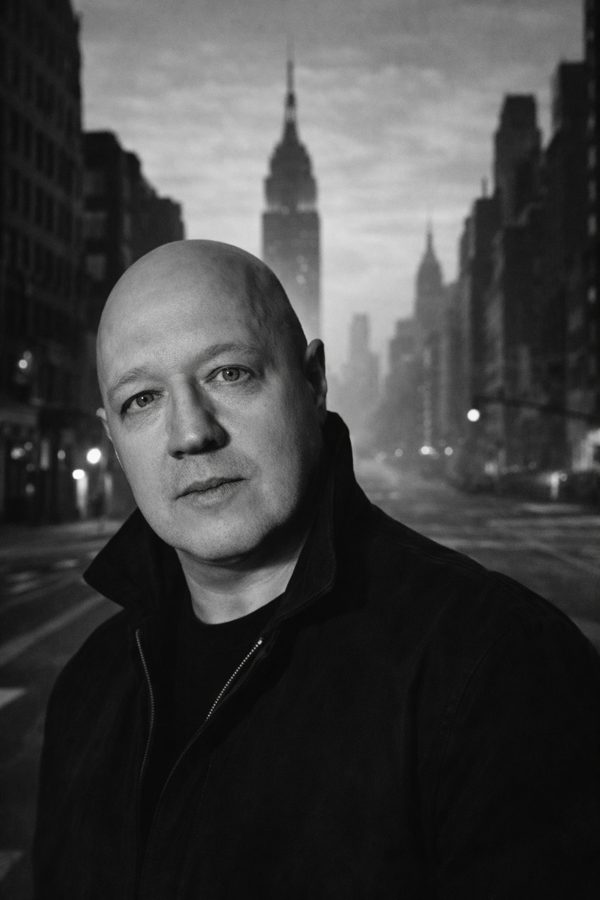
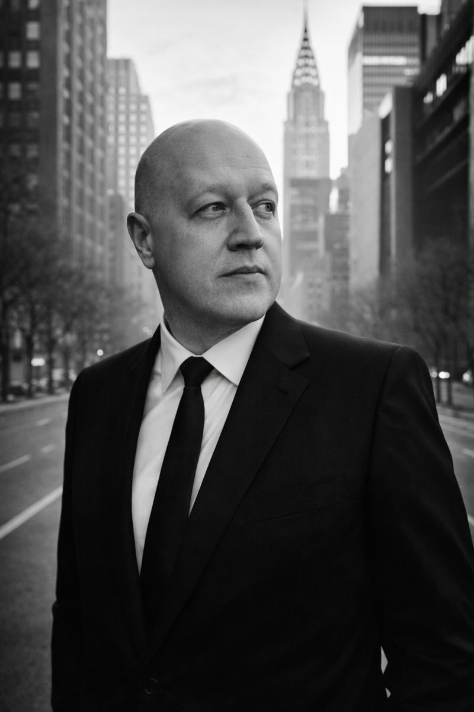
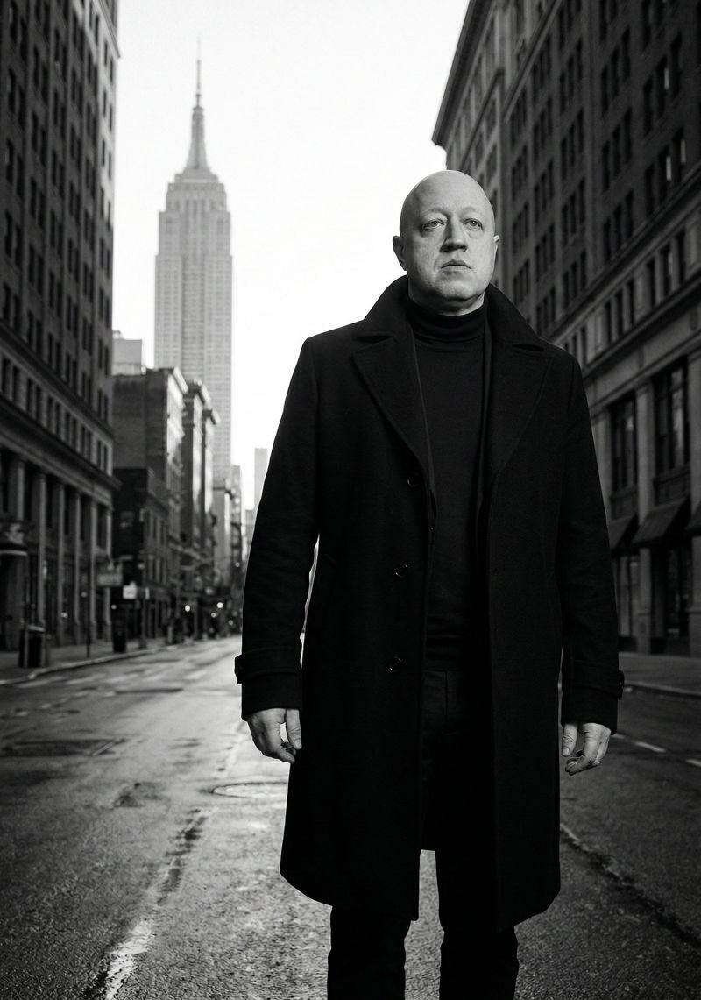

Дмитрий Маркадеев — дизайнер и художник, работающий на стыке моды, фотографии и музыки. Потомок французского маркиза де Маркаде, приглашённого Екатериной Великой на Урал в XVIII веке, он несёт в себе синтез европейской утончённости и уральской силы.
Продолжатель дела отца — известного соликамского фотографа — Дмитрий превратил семейное наследие в уникальный творческий язык. Его минималистичный подход, где чёрное встречается с белым, а тишина — с ритмом, узнаваем далеко за пределами Пермского края.
Сегодня он создаёт из Соликамска — руководя легендарным «Фотомагазином» и превращая повседневное в искусство.
Нью-Йорк · 2024

Нью-Йорк · 2024

Нью-Йорк · 2024
В 1768 году французский маркиз Жан-Антуан де Маркаде прибыл в Россию по личному приглашению Екатерины Великой. Лучший горный инженер Франции был направлен на Урал — модернизировать добычу металлов. За три года он утроил производство и получил орден Святой Анны.
В 1785 году французское Marcadé превратилось в русское «Маркадеев» — «потомок Маркаде». Семья получила дворянство и герб с французскими лилиями и уральскими молотами. Более 250 лет эта фамилия соединяет Францию и Урал.
« Музыка — это то, что между нотами. Дизайн — это то, что между линиями. Настоящее искусство живёт в паузах. »— Дмитрий Маркадеев